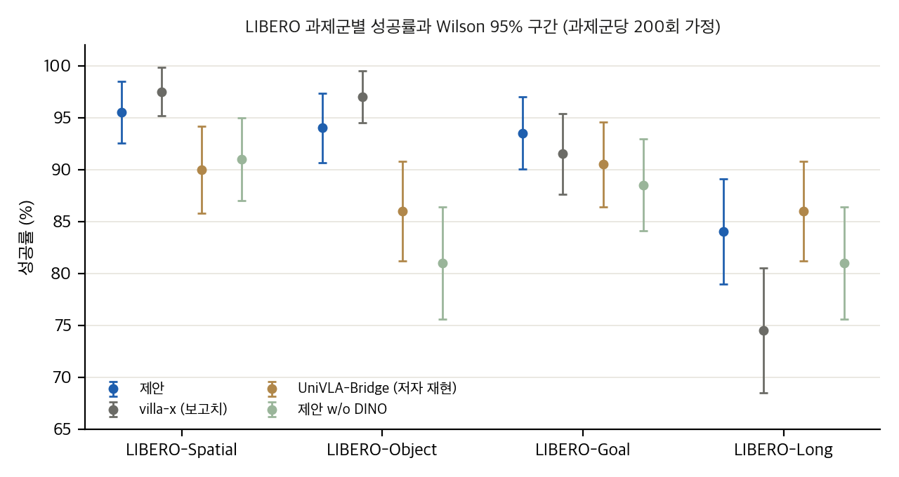
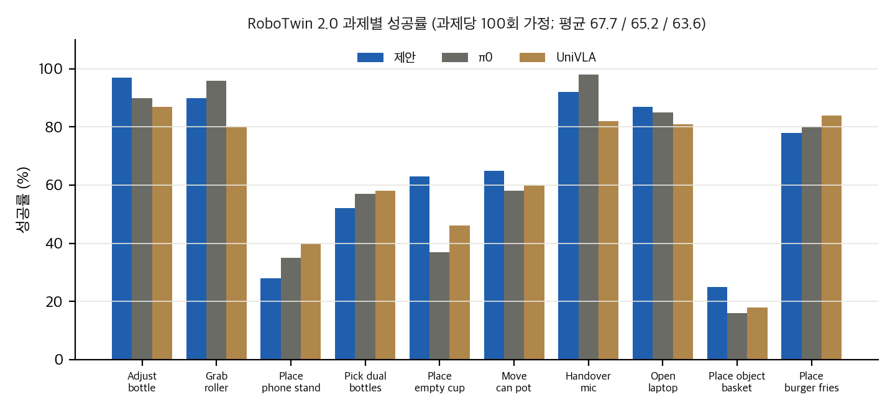
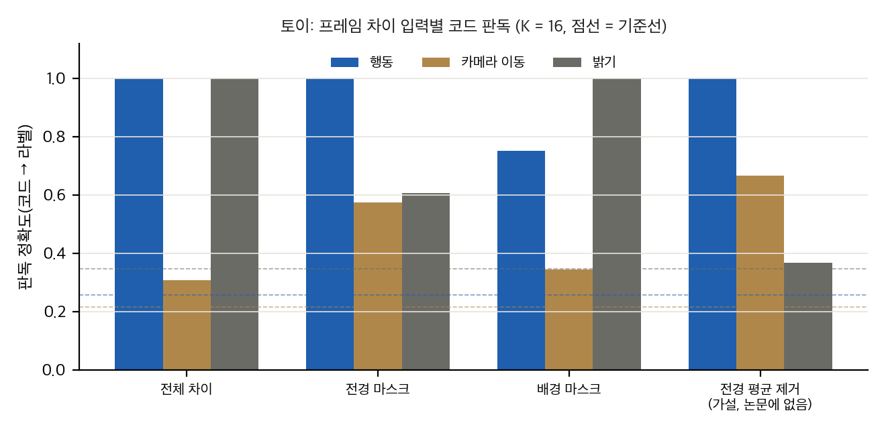
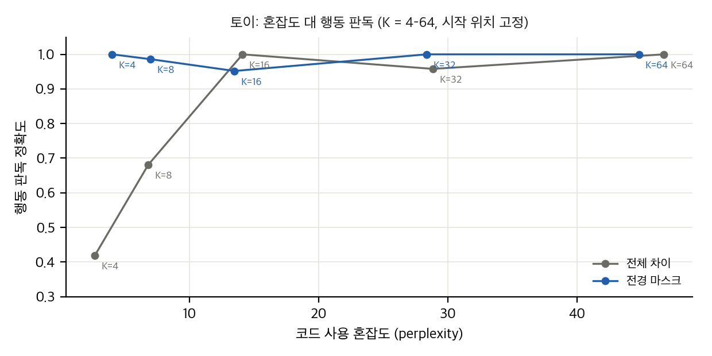

그림 1(직접 그림): LIBERO 과제군별 성공률과 Wilson 95% 구간. 과제군당 200회 가정이고, 기준선 행은 논문 보고치 또는 저자 재현치입니다.

그림 2(직접 그림): RoboTwin 2.0 과제별 성공률. 과제당 100회 가정입니다.

그림 3(직접 그림, 토이): 프레임 차이 입력별 코드 판독. 전경 마스크가 밝기를 줄여도 카메라 이동 정보가 마스크 안에 남습니다. "전경 평균 제거"는 논문에 없는 가설적 보정입니다.

그림 4(직접 그림, 토이): 코드 혼잡도 대 행동 판독. 전체 차이는 K가 낮을 때 행동을 잘 담지 못하고, 전경 마스크는 K = 4에서도 행동을 판독합니다.
Motion-Focused Latent Action Enables Cross-Embodiment VLA Training from Human EgoVideos (Xu, Zhang, Wang, Wang, Yu; IROS 2026 채택, arXiv:2606.18955 v2, 2026-07-02). 원문은 arXiv:2606.18955v2 PDF(https://arxiv.org/pdf/2606.18955v2, 8쪽, IEEE 2단)이고, 분석에는 PDF 텍스트 추출본을 썼습니다. 절·식·표·그림 번호는 원문 기준입니다.
논문은 사람 1인칭 영상에서 움직임만 담는 이산 잠재 행동(hybrid disentangled VQ-VAE)을 만들고, 그 코드를 VLM의 다음 토큰 목표로 사전학습한 뒤, 소량의 로봇 시연으로 VLM과 flow-matching action expert를 함께 미세조정합니다. 주장의 핵심은 "마스크로 배경과 움직임을 분리하면 잠재 행동이 로봇과 사람에서 같은 의미를 가진다"는 것입니다. 그런데 근거는 시뮬레이션 두 종(LIBERO, RoboTwin)과 실물 3과제, 그리고 CKA 한 쌍에 그칩니다. 분리 효과를 직접 떼어 보는 ablation(마스크 제거, 배경 경로 제거)은 없습니다.
| 실험 | 사전학습 데이터 | 평가 | 미세조정 데이터 | 기준선 |
|---|---|---|---|---|
| IV-A LIBERO | BridgeV2 3인칭 로봇 영상만(라벨 없음) | LIBERO 4개 과제군, 과제당 20회(Table I) | LIBERO 과제당 사람 시연 50개, 3인칭만 | LAPA, DP, OpenVLA, SpatialVLA, π0, π0-FAST, villa-x, UniVLA(Table I) |
| IV-B RoboTwin 2.0 | EgoDex 영상(사람, 라벨 없음) | 10과제(Table II), 시행 수 명시 없음 | 과제당 50 궤적, 손목 카메라 추가 | RDT, π0, ACT, DP, UniVLA; 절제: w/o DINO, Freeze |
| IV-B 실물 ARX R5 | EgoDex | 3과제, 시행 수 명시 없음(Fig. 3c) | 과제당 50 궤적, 20k 스텝 | UniVLA |
| IV-C CKA | BridgeV2 + FurnitureBench 표현 | 토큰 중심 CKA, 2만 쌍 | — | UniVLA 잠재 행동 |
| IV-D 시각화 | BridgeV2 + EgoDex | 같은 토큰을 받는 쌍 예시(Fig. 5) | — | — |
결과 요약
논문이 스스로 밝힌 한계 (V): 이산 행동 코드는 큰 의도는 잡지만 정밀 제어에는 표현력이 부족하고, 다중 스케일 잠재를 향후 과제로 둡니다.
arxiv.org/licenses/nonexclusive-distrib/1.0/입니다(비독점 배포, CC BY 아님). PDF에는 © 표시나 IEEE 저작권 문구가 없습니다(grep으로 확인). 따라서 논문 그림은 개인용 리포트와 PPT에만 넣고, 공개 산출물에는 넣지 않습니다.사람 영상에서 잠재 행동을 뽑아 VLA를 사전학습한다는 점에서 DreamX(사람 1인칭 영상 → 잠재 행동 4토큰, 확산 백본)와 가장 가깝습니다. 학습 방식은 VQ 재구성이고, 마스크로 움직임을 분리한다는 점이 새롭습니다. 자세한 관계는 02 §3에 있습니다.
재계산 스크립트는 analysis/table_check.py(→ table_check_results.json), analysis/motion_toy.py(→ motion_toy_results.json)입니다. 둘 다 numpy 단일 스레드로 수 초 안에 돕니다. 시행 수는 논문에 전부 적혀 있지 않아서, 보고된 %가 정수 성공 수로 떨어지는지로 추정했고 가정을 표에 같이 적었습니다.
| 표 | 보고된 형식 | 추정 시행 수 | 근거 |
|---|---|---|---|
| Table I (LIBERO) | 과제군 평균, 0.5% 단위 | 과제군당 200회(과제 10 × 20회) | 본문 IV-A "Each task is evaluated 20 times", 과제 10개. 우리 행 8개 값 모두 200회에서 정수 |
| Table II (RoboTwin) | 과제별 정수 % | 과제당 100회 | 모든 칸이 정수 %이고 홀수 값이 있어 50의 배수면 안 됨. 시행 수는 명시되지 않음 |
| Fig. 3c (실물) | 0.05 단위 | 과제당 20회 | 값이 모두 5%의 배수. 시행 수는 명시되지 않음 |
LIBERO 200회 가정에서 보고된 값이 정수 성공 수로 떨어지지 않는 칸이 17개 있습니다. 대부분 π0-FAST, SpatialVLA, OpenVLA, LAPA, DP 행입니다. 예를 들어 π0-FAST Long 60.2%는 200회에서 120.4회입니다. 500회로 바꾸면 이 칸은 정수가 되지만, 전체 40칸 중 16칸은 500회에서도 정수가 되지 않고 그중 5칸(OpenVLA Spatial·Long, DP Spatial·Goal, SpatialVLA Object)은 200회와 500회 모두에서 정수가 아닙니다. 따라서 이 기준선 값들은 한 가지 시행 수가 아니라 다른 평가 프로토콜(villa-x 논문 등)에서 가져온 것으로 보입니다. 이 기준선과의 비교는 시행 수가 같다는 가정이 깨진 상태입니다.
| 기준선 | 출처 표시 | 확인 |
|---|---|---|
| villa-x, π0, π0-FAST, SpatialVLA, OpenVLA, LAPA, DP | 본문: π0는 villa-x 보고치 사용 | villa-x 논문 Table(arXiv:2507.23682) 행과 값이 같음(villa-x, π0 reimpl., π0-FAST, SpatialVLA, OpenVLA 행 확인) |
| UniVLA-Bridge | 본문: "strictly reproduced on BridgeV2" | UniVLA 원 논문(arXiv:2505.06111, Table I)의 Bridge 행은 95.2/95.4/91.9/87.5/92.5이고, 논문 값은 90.0/86.0/90.5/86.0/88.1. 저자 재현은 원 보고치보다 4.4점 낮음 |
방법은 다음과 같습니다. 과제군(또는 과제)별 Fisher 정확 검정, 층화 Mantel–Haenszel(CMH, 연속성 보정), 합산 Fisher를 계산했고, 비교 대상이 여러 개인 경우 Holm 보정을 적용했습니다. 모든 검정은 과제군 내 시드 변동을 포함하지 않습니다. 시드가 하나라면 여기서 나오는 p 값은 시행 샘플링 변동만 반영합니다.
| 비교 | 평균 차이(점) | 합산 Fisher p | CMH p (과제군 층화) | Holm p (기준선 8개) |
|---|---|---|---|---|
| 제안 대 villa-x | +1.6 | 0.30 | 0.28 | 0.30 |
| 제안 대 UniVLA(저자 재현) | +3.6 | 0.020 | 0.020 | 0.039 |
| 제안 대 π0-FAST* | +6.3 | 1×10⁻⁴ | 5×10⁻⁵ | 3×10⁻⁴ |
| 제안 대 π0* | +10.6 | ~0 | ~0 | ~0 |
| 제안 대 w/o DINO (절제) | +6.4 | 8×10⁻⁵ | 8×10⁻⁵ | — |
*시행 수 가정이 깨지는 행(§1.3). 과제군별로 보면 villa-x 대비 Long만 p = 0.026(Fisher)이고, Goal은 p = 0.57입니다. 나머지 과제군은 유의하지 않습니다.
Wilson 95% 구간(합산): 제안 91.8 [89.6, 93.5], villa-x 90.1 [87.9, 92.0]. 두 구간이 겹칩니다. 과제군별 구간은 Spatial [91.7, 97.6], Object [89.8, 96.5], Goal [89.2, 96.2], Long [78.3, 88.4]입니다.
| 비교 | 차이(점) | 합산 Fisher p | CMH p (과제 층화) | Holm p (7개) | 과제별 부호 검정 |
|---|---|---|---|---|---|
| 제안 대 π0 | +2.5 | 0.26 | 0.18 | 0.26 | — |
| 제안 대 UniVLA | +4.1 | 0.060 | 0.032 | 0.12 | 7승 3패, p = 0.34 |
| 제안 대 w/o DINO | +4.9 | 0.024 | 0.009 | 0.073 | — |
| 제안 대 Freeze | +15.3 | ~0 | ~0 | ~0 | — |
RDT, ACT, DP와의 차이는 모두 p < 10⁻¹⁴입니다(표 생략).
해석: 제안은 RoboTwin에서 π0, UniVLA와 통계적으로 구별되지 않습니다. "comparable" 표현은 맞지만 "앞선다"고 쓰기는 어렵습니다. 의도-인지 분리(w/o DINO 대비)는 층화 검정에서 nominal p = 0.009이고 보정 후에는 0.073입니다.
| 과제 | 제안 | UniVLA | Fisher p |
|---|---|---|---|
| 병을 접시에 올리기 | 15/20 | 6/20 | 0.010 |
| 전선 뽑기 | 16/20 | 7/20 | 0.0095 |
| 수건 접기 | 15/20 | 10/20 | 0.19 |
| 합계 | 46/60 | 23/60 | 3.9×10⁻⁵ (CMH OR 5.3, p 5.7×10⁻⁵) |
과제별 Holm 보정 p는 0.029, 0.029, 0.19입니다. 과제당 20회와 1회 시드라는 가정 아래에서 방향은 분명하지만, 표본이 작아서 크기 추정은 불안정합니다.
평균 차이는 0.048입니다. 부트스트랩 표준편차를 표본 표준편차로 본다면 Welch t ≈ 29입니다. 그러나 이 표준편차는 토큰 중심의 재표본 변동입니다. 학습 시드 변동이 아니므로 "유의하게 높다"는 주장을 뒷받침하지 못합니다. 또한 이 분석은 BridgeV2와 FurnitureBench 두 로봇 데이터셋만 사용합니다. 사람 영상은 들어 있지 않습니다.
p̂ = k/n, z = 1.96일 때 중심 (p̂ + z²/2n)/(1 + z²/n), 반폭 z√(p̂(1−p̂)/n + z²/4n²)/(1 + z²/n). 구현은 wilson()에 있습니다. 극단 성공률(p̂ ≈ 0.9)에서도 Wald보다 안정적입니다.
과제군 g마다 2×2 표 (a_g, b_g, c_g, d_g), n_g = a+b+c+d일 때
LIBERO 결과에서 제안 대 UniVLA의 OR_MH = 1.50, 제안 대 villa-x는 1.23입니다.
m개 p 값을 정렬해 p_(i) × (m − i + 1)의 누적 최댓값을 취합니다.
코드(lam.py)는 16×16 패치 격자에서 마스크 면적 비율 a를 attention = (5·a + 0.3)/5.3으로 계산합니다. 이 식은 가중치처럼 보이지만 shared_step에서 임계값 0.5로 이진화합니다. 따라서 패치가 전경이 되는 조건은 (5a + 0.3)/5.3 > 0.5 ⇔ a > 0.47입니다. 즉 패치 면적의 47% 이상이 마스크여야 전경 손실에 들어갑니다. 논문은 "foreground"라고만 씁니다. 이 임계값은 논문에 없습니다(04 D3).
코드의 random_resized_crop 설정은 scale=[0.9, 0.9], ratio=[1, 1]입니다. 면적 0.9 자르기를 가정하면 자른 한 변은 √0.9 = 0.949 W이고, 다시 키우면 배율은 1/0.949 = 1.054입니다. 자르기 시작점을 u(0 ≤ u ≤ 0.051 W)라고 하면 원래 좌표 x에 있는 내용은 x′ = (x − u)/0.949로 옮겨갑니다. 마스크는 자르지 않으므로 어긋남은
d(x) = x′ − x = 0.054 x − 1.054 u
입니다(W = 224 기준). 중앙(x = 112)에서는 |d| ≤ 6 px, 가장자리에서는 최대 약 12 px입니다. 패치 한 칸은 14 px이므로, 가장자리 패치는 한 칸 가까이 밀립니다. 이것은 가정(면적 비율 해석)에 따른 계산이고, 실제 dlimp 구현에서 자르기 변수를 확인하지는 못했습니다(04 D9).
전경 손실은 Σ(pred − target)² · m / (Σm · D)입니다. 분모는 전경 패치 수 × 768입니다. 배경 손실도 같은 방식입니다. 전체 경로는 마스크 없이 평균 제곱 오차입니다. 세 항의 가중치는 모두 1입니다(코드 w_recon_*).
analysis/motion_toy.py)(A) 입력 비교, K = 16, 시작 위치 고정, 배경 0.05
| 입력 | 행동 판독 | 카메라 판독(기준선 0.22) | 밝기 판독(기준선 0.35) | 혼잡도 |
|---|---|---|---|---|
| 전체 차이 | 1.00 | 0.31 | 1.00 | 14.7 |
| 전경 마스크 | 1.00 | 0.58 | 0.61 | 14.4 |
| 배경 마스크 | 0.75 | 0.34 | 1.00 | 13.2 |
| 전경 평균 제거(가설) | 1.00 | 0.67 | 0.37 | 11.9 |
(B) 시작 위치를 무작위로 두면(배경 0.05): 행동 판독이 기준선 근처(0.28 대 0.26)로 떨어집니다. 위치 교란이 k-means 군집을 지배하기 때문입니다. 밝기 판독은 전체 차이에서 1.00, 전경 마스크에서 0.40입니다. 배경 0.25에서도 같은 방향입니다(표 생략, motion_toy_results.json).
(C) K 스윕(시작 위치 고정): 전체 차이는 K = 4에서 행동 판독 0.42로 낮고, K ≥ 16에서 1.0 근처입니다. 전경 마스크는 K = 4에서도 1.00입니다. 혼잡도는 K에 따라 2.6–47로 늘어납니다. 낮은 K에서는 마스크가 행동 판독에 도움이 되고, 높은 K에서는 차이가 줄어듭니다.
(D) 자르기 불일치(시작 위치 고정, K = 16, 전경 마스크):
| 조건 | 행동 판독 | 카메라 판독 | 밝기 판독 | 가짜 움직임 라벨(25종) 판독 |
|---|---|---|---|---|
| 올바른 마스크 | 0.98 | 0.61 | 0.59 | — |
| 공통 자르기, 마스크는 그대로 | 0.79 | 0.26 | 0.47 | — |
| 프레임 t+1만 자르기 | 0.62 | 0.31 | 0.50 | 0.145(기준선 0.047) |
프레임 t+1만 자르면 코드가 자르기 이동 자체를 판독할 수 있을 만큼 담습니다(0.145 대 0.047).
공식 코드는 얕게 clone해 분석 폴더 안에 두었습니다(repo/, 저장소 .gitignore로 제외). 대조 기준 커밋은 **fd614f7(2026-06-18, "update readme")**입니다. 저장소는 Apache-2.0(LICENSE), 별점 0, 마지막 push 2026-06-18입니다. v2 초록의 코드 링크는 2026-07-02에 추가되었으므로, 이 커밋은 v1 시점의 스냅샷에 가깝습니다. 태그나 릴리스는 없습니다. 대조 범위는 잠재 행동 모델(latent_action_model/), VLM 사전학습과 미세조정(vla-scripts/), 데이터 로더(prismatic/vla/datasets/)입니다. 실행은 하지 않았습니다(CUDA 전제, §4).
| 경로 | 내용 | 논문과의 관계 |
|---|---|---|
latent_action_model/genie/modules/lam.py (229줄) |
이중 코드북 VQ-VAE, 세 디코딩 경로 | III-B 전부 |
latent_action_model/genie/model.py (481줄) |
Lightning 학습 루프, 손실, 코드 사용률 | III-B.4, Eq. 1 |
latent_action_model/genie/dataset.py, prismatic/vla/datasets/ |
RLDS 로더, 쌍 샘플링, 마스크 전달, 증강 | III-B 입력, 실험 설정 |
latent_action_model/config/*.yaml |
EgoDex / Bridge 설정 | IV-A, IV-B |
vla-scripts/train.py |
VLM 사전학습(잠재 토큰 NLL) | III-C, Eq. 2 |
vla-scripts/finetune_libero.py |
LIBERO 미세조정(L1 헤드) | IV-A |
vla-scripts/finetune_robotwin_flow.py (1166줄) |
RoboTwin 미세조정(flow-matching 헤드) | III-D, IV-B |
vla-scripts/deployment_real.py |
실물 배포 | IV-B 실물 |
| 없음 | 데이터 전처리, SAM2·RoboEngine 마스크 생성, 학습된 체크포인트 | README: "data preprocessing script will be released upon finalization" |
판정: 일치(논문과 코드가 같음), 차이(코드가 논문과 다름), 누락(논문은 있으나 코드가 없음), 버그(동작 오류), 미확인(코드만으로 알 수 없음).
| ID | 논문 주장(위치) | 코드(파일:줄) | 판정 |
|---|---|---|---|
| D1 | SAM2로 사람 손 마스크 생성(III-B.3) | 로더는 egodex_with_sam2_mask_all 데이터의 mask 키를 읽음(lam-stage-2-egodex.yaml, configs.py:79–80). 생성 코드 없음 |
누락(생성 파이프라인) |
| D2 | 로봇 마스크는 RoboEngine(IV-A) | Bridge 설정은 bridge_oxeall의 mask 키를 읽음(lam-stage-2-bridgeall.yaml). 생성 코드 없음 |
누락 |
| D3 | 행동 경로는 "전경 영역"만 감독(III-B.3) | model.py:291–299: 주의 맵 임계값 0.5로 이진화. 실제 전경 조건은 마스크 면적 > 47%(03 §3.4). 맵의 연속 가중치(lam.py:137–139)는 쓰이지 않음 |
차이(임계값은 논문에 없음) |
| D4 | 전체 재구성 경로(III-B.3) | lam.py:204–213, model.py:320: 마스크 없는 전역 MSE, 가중치 1. 행동 코드가 배경·밝기를 설명하는 통로 |
일치(논문도 전역 항 포함) — 누수 통로(03 §4) |
| D5 | Eq. 1의 λ_recon, λ_vq, λ_commit | 재구성 항 가중치 1, 1, 1(model.py:320–325), VQ 가중치 1, 커밋 β = 0.25(model.py:357, vq_beta). 논문은 값을 주지 않음 |
미확인(논문 누락) |
| D6 | 코드북 크기 16 두 개, 쌍당 토큰 4(III-B.2) | lam.py:68–79(num_latents=16), lam.py:46(num_codes=4) |
일치 |
| D7 | VQ 재시작(논문 언급 없음) | model.py:440–441: 에포크마다 배경 코드북만 random_restart(). 행동 코드북은 재시작하지 않음. 재시작은 randperm으로 기존 코드를 복사(blocks.py:435–445) |
차이(행동 코드북 사용률 관리 없음; 재시작 방식이 죽은 코드에 기존 코드를 복사) |
| D8 | "1초 간격 쌍"(III-B 서두) | dataset.py:357–363: 설정 목록에 없는 데이터셋은 창 크기가 기본값. datasets.py:337의 기본 window_size=10이 그대로 전달되어 쌍 간격은 9프레임. 목록에 없는 EgoDex와 Bridge 모두 해당. 영상 fps 확인 필요 |
차이(1초는 fps 9에서만 성립) |
| D9 | (논문 언급 없음) 증강 | datasets.py:383–410: 영상에 random_resized_crop(scale 0.9) 적용. 마스크 증강은 주석 처리(#"mask": mask_augment_kwargs). EgoDex 설정은 image_aug: true. obs_transforms.augment는 image_* 키 중 지정된 것만 자름. 두 프레임이 같은 자르기 변수를 쓰는지는 dlimp 내부 구현에 달려 있어 미확인 |
버그 가능성: 이미지와 마스크 정렬 불일치(03 §3.5). 프레임 단위 독립 자르기라면 가짜 움직임 |
| D10 | 코드북 크기 16, 행동 토큰 4(III-C) | vla-scripts/train.py:42(codebook_size=16), 특수 토큰 <ACT_i> 16개 |
일치 |
| D11 | Prismatic-7B 백본(III-C) | train.py:38(prism-dinosiglip-224px+7b), README의 HF 링크 |
일치 |
| D12 | 디코더와 VLM 어휘 연결(III-C, Eq. 2) | train.py:186–218: 학습된 LAM으로 쌍의 토큰을 만들어 VLM 목표로 사용 |
일치(사전학습 데이터 규모 미기재) |
| D13 | 의도 예측 CE, λ_intent(Eq. 5) | finetune_robotwin_flow.py:1076: VLA 미동결 시 L = 10·L_flow + L_CE(상대 가중 0.1). 동결 시 L = L_flow로 CE 없음 |
차이(λ 값은 논문에 없음; 기본 설정은 동결) |
| D14 | VLM은 LoRA로 미세조정(III-D) | finetune_robotwin_flow.py:855(freeze_vla=True), :857(use_lora=False). finetune_libero.py:175–176 동일. 기본값은 동결 + LoRA 없음. LoRA 설정은 실행 경로 이름(lora-r32)에서만 드러남 |
차이(기본값이 논문 주 설정과 다름) |
| D15 | 미세조정 흐름: VLM 은닉 + DINOv2 + 고유 감각(Eq. 3), flow-matching(Eq. 4) | RoboTwin: DINOv2 특징(x_norm_patchtokens)을 주 시점과 손목 시점에 모두 씀(:796). 흐름 손실은 :725, :811 |
일치 |
| D16 | LIBERO 행동 헤드: "UniVLA의 자기회귀 헤드"(IV-A) | finetune_libero.py:40–60: MAP 풀링과 MLP(tanh) 출력, L1 회귀(:133). 자기회귀 디코딩이 아님. 흐름 손실도 아님 |
차이(설명과 구현 불일치) |
| D17 | LIBERO는 3인칭 영상만 씀(IV-A) | finetune_libero.py:100: wrist_dino = True로 손목 DINOv2 특징을 항상 사용. 주 시점 임베딩은 VLM 은닉 상태(:105), DINO가 아님. 주 시점 DINO 분기(:113–120)는 else에만 있음 |
차이(중요): 논문의 "DINO로 상태 인지"와 LIBERO 설정 설명이 코드와 맞지 않음. 손목 입력을 쓴다면 IV-A 설명과 다름 |
| D18 | 잠재 토큰 위치 선택 | finetune_libero.py의 action_gt > 32000 마스크: 어휘 ID가 32000보다 큰 토큰을 잠재 행동으로 씀 |
미확인(32000 오프셋의 근거 없음) |
| D19 | 자기회귀 대 flow 헤드(RoboTwin) | finetune_robotwin_flow.py:654–725: HRDT 계열 FlowBlock 기반 헤드 |
일치 |
| D20 | 실험 설정 값: LIBERO 30k/40k 스텝, 배치 128(IV-A) | train.sh와 finetune 설정: 배치 8, 최대 40000 스텝(finetune_libero.py:154–155). 배치 128과 불일치하는 설정 확인 필요 |
차이(미확인) |
| D21 | 코드북 크기 "32"(설정) | finetune_robotwin_flow.py:844에 lam_num_latents=32가 있으나 lam.py:70, 75는 16을 고정. 인자는 무시됨 |
버그(인자 무시, 실행은 됨) |
| D22 | 학습 명령 | latent_action_model/train.sh는 lam-stage-2-mix.yaml을 부르지만 저장소에 없음(설정은 egodex와 bridgeall 두 개). 경로는 MFVLA/… 고정 |
버그 |
| D23 | 테스트 시 코드 사용률 그림 | model.py:448–455: self.lam.vq를 참조하지만 모듈 이름은 vq_action, vq_bg. 테스트 종료 때 AttributeError |
버그 |
| D24 | (실행 장치) | model.py:363, 368: .cuda() 하드코딩. flash-attn==2.5.5(README). torch.hub로 DINOv2 다운로드 |
제약(CUDA·네트워크) |
| D25 | 입력 마스크 채널 | 주석은 마스크가 2채널(lam.py:131)이라 하지만 로더는 1채널(datasets.py:310–313). 실제 형상은 (B,T,1,H,W)이고 동작에는 문제 없음 |
주석 오류 |
| D26 | 공개 상태 | README 제목 "Motion-Focused Vision-Language-Action Model via Hybrid Disentangled Action Tokenization"은 arXiv 제목과 다름. README는 데이터 전처리를 "released upon finalization"이라 함 | 누락·제목 불일치 |
| D27 | 평가 시행 수(IV-A, 과제당 20회) | README: --num_trials_per_task 20 --seed 7(run_libero_eval.py) |
일치 |
죽은 코드 참고: model.py:325–349의 행동 손실 분기는 pred_action이 없어서 실행되지 않습니다. lam.py의 shallow 분기(dim_half)도 입력이 768차원뿐이라 빈 텐서입니다. 두 경우 모두 결과에 영향은 없습니다.
논문 주장을 원문 기준으로 대조했습니다. 판정: 지지, 부분 지지, 미지지, 검증 불가.
| ID | 주장(위치) | 검증 결과 | 판정 |
|---|---|---|---|
| C1 | 초록: "pre-trained exclusively on unlabeled human videos" | IV-A(LIBERO, 헤드라인 평균 91.8)는 BridgeV2 로봇 영상으로 사전학습. 사람 영상은 IV-B(RoboTwin)와 실물에서만 씀 | 부분 지지(헤드라인과 불일치) |
| C2 | 초록: "requiring only ∼50 trajectories" | 과제당 50개. LIBERO는 10과제(군당 500개), RoboTwin 10과제(500개) | 부분 지지(과제당 수치) |
| C3 | Table I: 평균이 모든 기준선보다 높다 | 91.8 > 90.1(villa-x): 합산 Fisher p = 0.30. UniVLA(저자 재현)보다는 p = 0.020, 보정 0.039 | 부분 지지(villa-x 대비 유의하지 않음) |
| C4 | IV-A: Goal +2.0, Long +9.5(villa-x 대비) | 차이 값은 정확(93.5−91.5, 84.0−74.5). Long만 p = 0.026(과제군 내), Goal p = 0.57 | 지지(값), Long만 유의 |
| C5 | Table I 기준선 UniVLA "strictly reproduced" | 원 논문 Bridge 평균 92.5 대 재현 88.1 | 지지되지 않음(재현값이 4.4점 낮음) |
| C6 | Table II: "comparable to state-of-the-art" | 67.7 대 π0 65.2(p = 0.26), UniVLA 63.6(p = 0.06, 보정 0.12) | 지지(comparable), "앞선다"는 미지지 |
| C7 | 의도-인지 분리가 성능을 올린다(IV-A, IV-B) | w/o DINO 대비 LIBERO +6.4(p ≈ 8×10⁻⁵), RoboTwin +4.9(p = 0.024, 보정 0.073). 단일 시드로 보임 | 부분 지지(LIBERO 강함, RoboTwin 약함) |
| C8 | 동결 VLM도 RDT와 비슷하니 VLM 사전학습이 효과적(IV-B) | 대조(사전학습 없는 같은 구조)가 없음. RDT는 다른 아키텍처 | 미지지(근거 부족) |
| C9 | 실물에서 UniVLA를 앞선다(Fig. 3c) | 46/60 대 23/60, p = 4×10⁻⁵(시행 수 20회 가정). 과제 3개 중 2개만 p < 0.05(보정 0.029) | 지지(소표본, 시드 미보고) |
| C10 | CKA 0.9139 대 0.8659에서 "significantly higher" | 부트스트랩 표준편차는 시드 변동이 아님. 데이터 쌍 1개(BridgeV2 대 FurnitureBench), 사람 영상 없음 | 미지지(유의성 주장) |
| C11 | Fig. 5: 사람과 로봇이 같은 토큰을 받는다 | 세 예시의 정성적 나열. 정량 지표 없음 | 검증 불가(예시 3개) |
| C12 | 행동 코드는 배경과 카메라 이동을 분리한다(I, III-B) | 전체 재구성 경로가 마스크 없이 학습됨(D4). 분리 여부를 재는 probe가 없음. toy에서 전경 마스크 안에도 카메라 정보가 남음(03 §4.2 A) | 미검증(누수 가능성) |
| C13 | 코드북 사용이 건강하다(암묵) | 사용률·혼잡도를 보고하지 않음. 행동 코드북은 재시작하지 않음(D7) | 검증 불가 |
| C14 | 시드 반복, 신뢰구간 | 어떤 표에도 없음 | 미지지(보고 부재) |
결론: 공식 재현은 이 맥에서 불가능하고, 아이디어 재구현은 중간 난이도입니다.
(a) 공식 재현
.cuda() 하드코딩, flash-attn 2.5.5, torch.hub 다운로드). 이 맥(M4 Pro, 통합 메모리 약 24 GiB, MPS, CUDA 없음, torch 미설치)에서는 실행 자체가 막힙니다.devices: 2, 배치 64/장치, 2 epoch, 16-mixed). VLM 사전학습과 LIBERO 미세조정은 GPU 4장(train.sh), RoboTwin은 2장. GPU 모델은 기재되지 않았습니다.(b) 아이디어 재구현
| 갈래 | 대표 연구 | 이 논문이 가져온 것 |
|---|---|---|
| 잠재 행동 사전학습(VQ 재구성) | LAPA [9], IGOR [10] | 프레임 쌍을 이산 코드로 압축하고 재구성하는 틀. 배경과 카메라 이동이 섞인다는 진단(I) |
| 작업 중심 잠재 행동 | UniVLA [12] | 두 단계 학습과 언어 유도로 움직임 집중. 이 논문은 언어 대신 전경 마스크를 쓴다고 주장 |
| 로봇 상태 결합 잠재 | villa-x [17], GO-1 [5], GR00T N1 [14] | 잠재 행동에 로봇 상태·행동 감독을 붙이는 방식. 이 논문은 행동 라벨 없이 사람 영상만 씀 |
| 사람 데이터 VLA | EgoMimic [6], MotionTrans [7], H-RDT [8], UMI [18] | 손 자세 라벨(AR/VR, 손잡이) 기반. 이 논문은 라벨이 없다고 비교 |
| VLA 바탕 | OpenVLA [13], π0 [2], RDT [3], Prismatic-7B [20] | VLM 백본(Prismatic)과 flow-matching action expert(RDT 계열 헤드) |
| 표현 정렬 측정 | CKA [30] | 도메인 부분공간을 지운 뒤 로봇 두 데이터셋의 토큰 표현 정렬 |
| 분할 | SAM2 [19], RoboEngine [26] | 손·로봇 마스크 생성 |
dreamx/): 사전학습된 영상 확산 모델(Cosmos-Predict2.5 2B)에 질의를 붙여 잠재 프레임당 행동 토큰 4개를 뽑습니다. 이 토큰만으로 미래 영상을 재구성합니다. 이 논문과 토큰 개수(4)와 "사람·로봇 공통 인터페이스"라는 목표가 같습니다. 차이는 재구성 백본(확산 대 VQ-transformer)과 마스크 유무입니다. DreamX에는 마스크로 움직임을 분리하는 장치가 없습니다.thinkworld/): 사람·로봇 공유 손목 움직임 토큰을 쓰고, 1초 뒤 DINO 특징을 예측합니다. 이 논문과 "1초 간격 쌍"과 DINO 특징 예측이 비슷합니다. 인용되지 않았습니다.flashdexretarget/): 사람 손-물체 시연을 레퍼런스 조건부 RL 정책으로 로봇 손 궤적에 옮기는 연구입니다. 사람과 로봇을 궤적 수준에서 맞추는 방법이라서, 잠재 토큰을 공유하는 이 논문의 방식과 대비됩니다.| 구성 요소 | 출처 | 이 논문의 새 점 |
|---|---|---|
| 이중 코드북 VQ, 쌍당 토큰 4 | LAPA [9]와 VQ 재구성 계열 | 행동 코드북과 배경 코드북을 분리 |
| 마스크 손실(전경·배경 경로) | SAM2 [19], RoboEngine [26] | 디코더 경로를 세 개로 나누고 영역별로 감독 |
| DINOv2 특징 | DINOv2 (코드 dinov2_vitb14_reg) |
미세조정에서 상태 인지를 DINO에 맡김 |
| VLM에 잠재 토큰 넣기 | UniVLA [12]의 어휘 확장 | 사람 영상으로 사전학습 |
| 의도-인지 분리 | 논문의 주장 | DINO와 VLM 임베딩을 바꿔 가며 절제 |
| 폴더 | 공통점 | 차이와 시사점 |
|---|---|---|
dreamx/ |
사람 영상에서 잠재 행동 토큰 4개를 뽑고 사람·로봇 공통 인터페이스로 씀 | DreamX는 영상 확산 백본을 디코더로 쓰고, 이 논문은 VQ 재구성과 마스크를 씀. DreamX는 공개 코드가 없고, 이 논문은 있음. 두 논문 모두 움직임과 배경을 어떻게 분리했는지 직접 측정한 실험이 부족함 |
openwam/ |
행동 생성 설계 선택을 부품으로 쪼갬 | OpenWAM은 영상 생성 prior를 쓰고, 이 논문은 VLM에 잠재 토큰을 넣음. 둘 다 사전학습 데이터 규모가 재현의 장벽 |
agentic_wam/ |
행동과 미래 영상을 함께 다룸 | AW-0는 코드·미래 영상·행동을 Mixture-of-Transformers 하나에서 함께 denoise합니다. 이 논문은 잠재 행동 토큰만 VLM에 넣고 영상 생성은 하지 않습니다 |
pacevla/ |
VLA의 action expert만 바꿈 | PaceVLA는 여러 decoder와 라우터. 이 논문은 action expert 입력에 DINO 특징과 VLM 의도를 함께 넣음 |
thinkworld/ |
1초 뒤 DINO 특징 예측 | ThinkWorld는 예측을 RL 보상으로 쓰고, 이 논문은 잠재 행동 학습에 씀. 이 논문의 "1초 간격 쌍"과 설계 근거를 비교할 수 있음 |
flashdexretarget/ |
사람 시연을 로봇 손으로 옮김 | 사람-로봇 연결 방식이 다름(이 논문은 잠재 토큰으로 연결) |
| 저장소 | 무엇인가 | 공식 여부 | 커밋 | 라이선스 | 별 |
|---|---|---|---|---|---|
shuiyigong/Motion-Focused-Latent-Action |
논문 코드(잠재 행동, VLM 사전학습, LIBERO·RoboTwin 미세조정, 실물 배포) | 공식(v2 초록 링크) | fd614f7 (2026-06-18, "update readme") |
Apache-2.0 | 0 |
OpenDriveLab/UniVLA |
UniVLA [12] 코드 | 원 저자 조직 추정(논문 본문에는 링크 없음, 미확인) | 0ab9e9d (2025-11-19) |
Apache-2.0 | 1,145 |
RoboTwin-Platform/RoboTwin |
RoboTwin 2.0 시뮬레이터와 벤치마크 [27] | 원 저자 조직 추정 | ea8b211 (2026-09-24) |
MIT | 3,049 |
apple-aiml-research/ml-egodex |
EgoDex 데이터 [28] (논문 README 링크는 apple/ml-egodex로 이동됨) |
원 저자 | 718d9eb (2026-09-11) |
NOASSERTION(라이선스 파일 확인 필요) | 410 |
TRI-ML/prismatic-vlms |
Prismatic VLM 백본 [20] | 백본 공식 | 874c5bb (2024-05-16) |
MIT | 1,026 |
villa-x와 LAPA의 공식 저장소는 gh search repos에서 찾지 못했습니다. 이 논문의 shuiyigong 저장소는 clone했습니다(repo/). 나머지는 메타데이터만 확인했습니다.